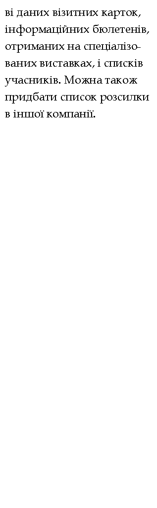
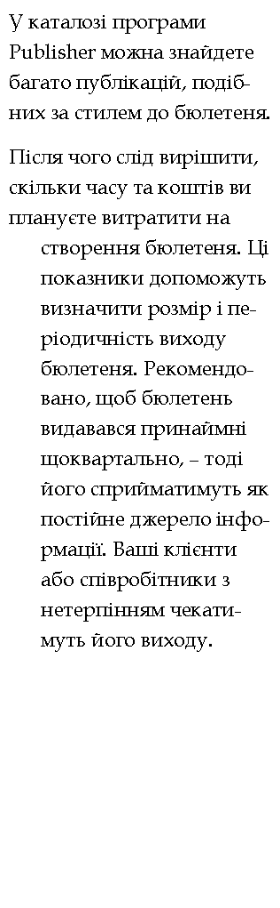
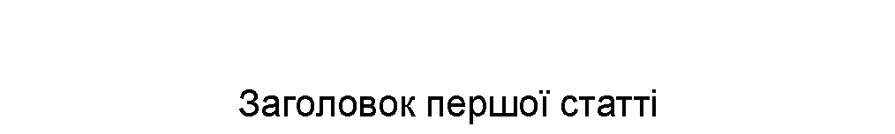
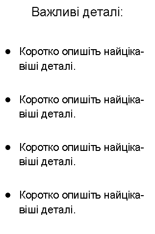
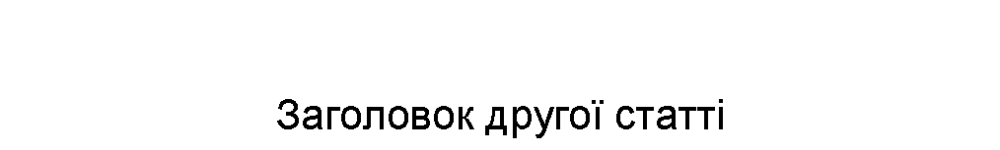
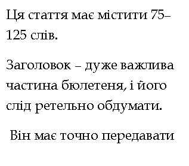
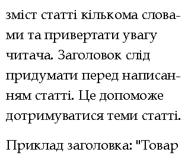
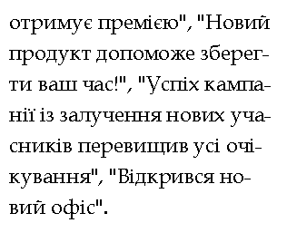
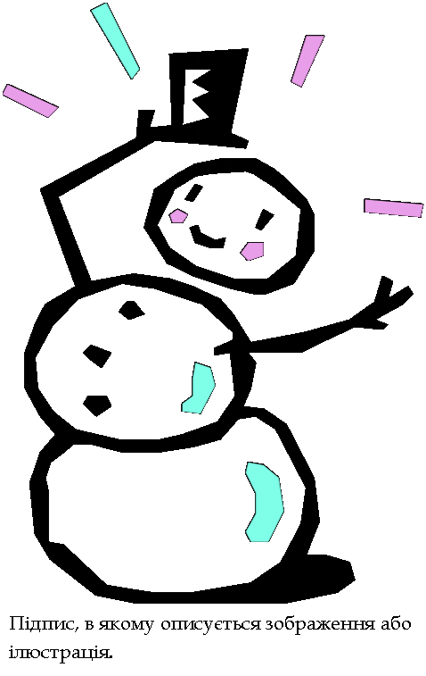
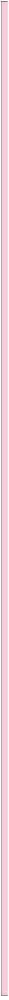
Головна сторінка
1
Внутрішня стаття
2
Внутрішня стаття
3
Внутрішня стаття
4
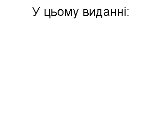
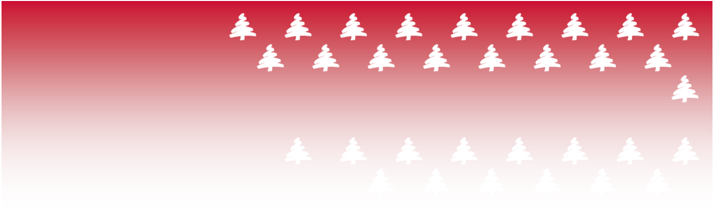
![Підпис: Ця стаття має містити 175–255 слів.
Бюлетень призначений для надання цільовій аудиторії певної інформації. Бюлетень можна використовувати для представлення на ринку товарів і послуг, а також створення цілісного образу вашої компанії, підвищення авторитету серед інших компаній, працівників і постачальників.
Спочатку слід визначити цільову аудиторію бюлетеня. Це можуть бути люди, які отримають корисну інформацію з бюлетеня, наприклад, співробітники, потенційні покупці або люди, які користуватимуться певними послугами.
Список розсилки можна створити на осно](index.files/image570.png) 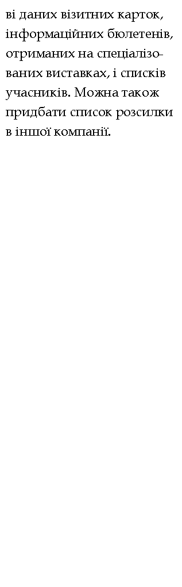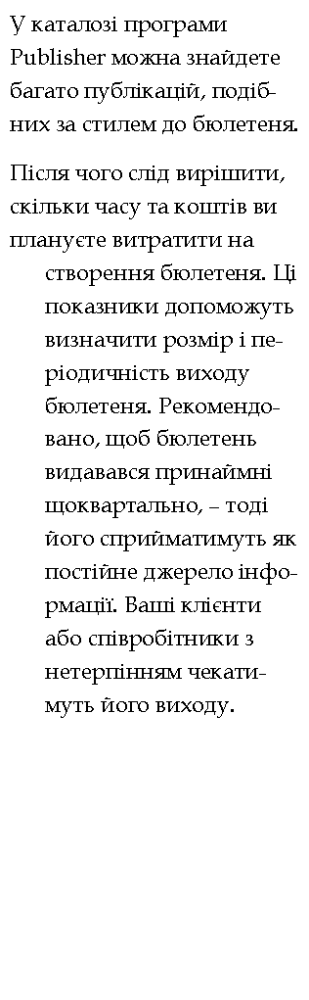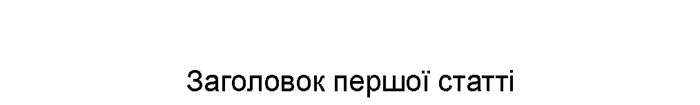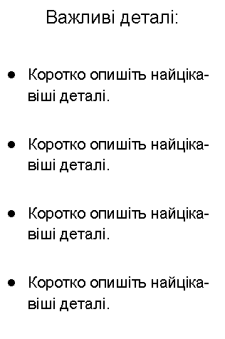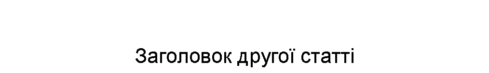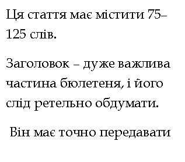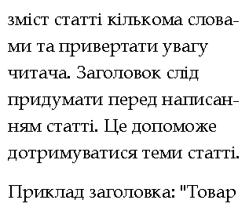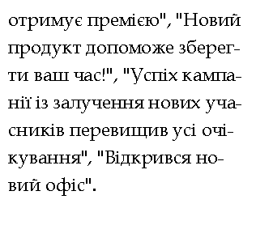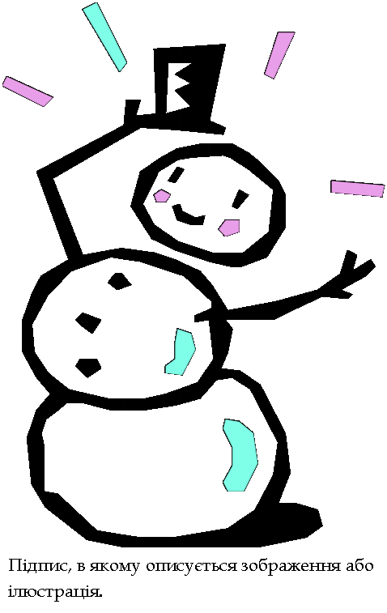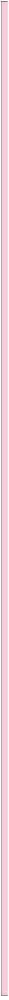
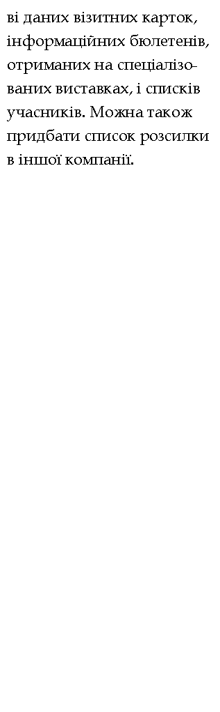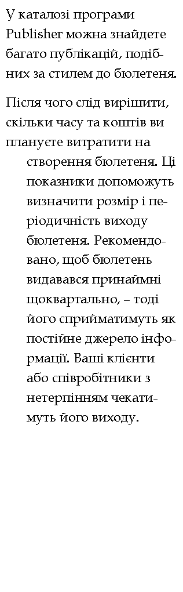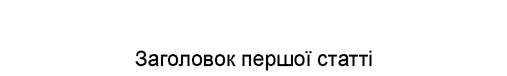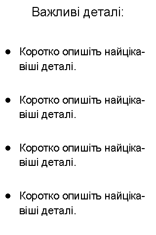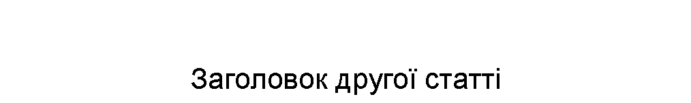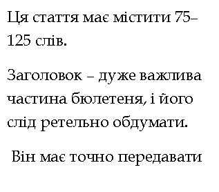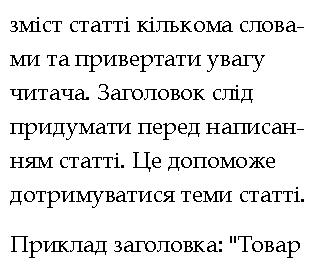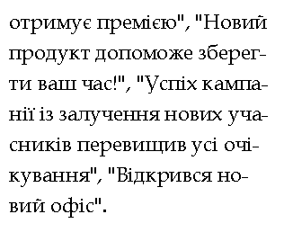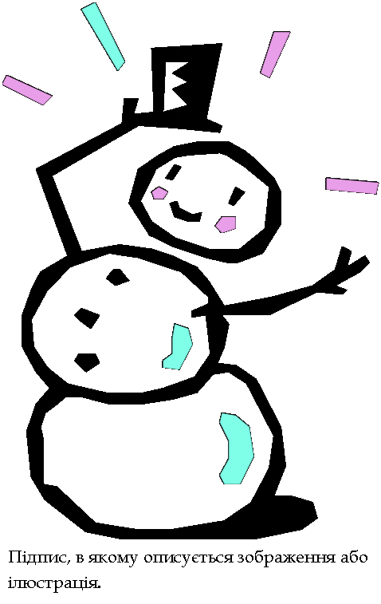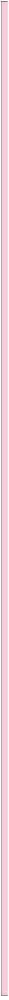
 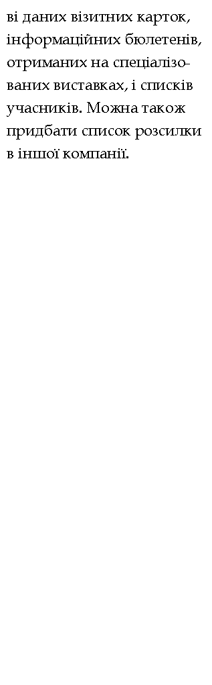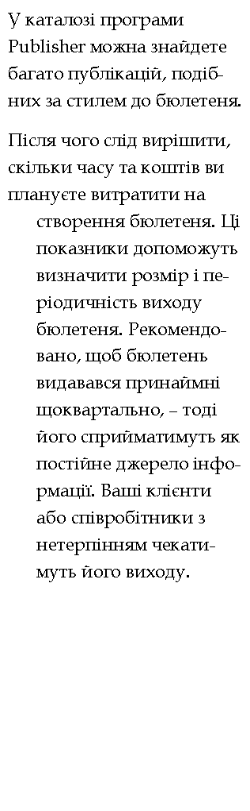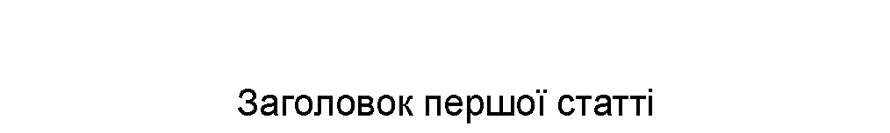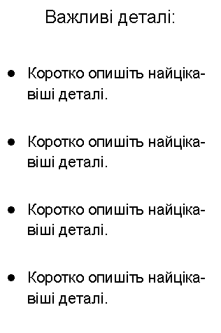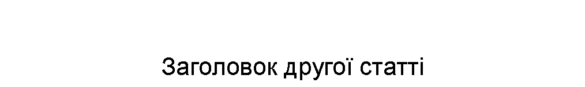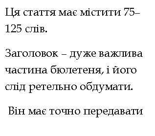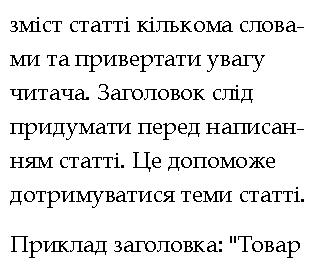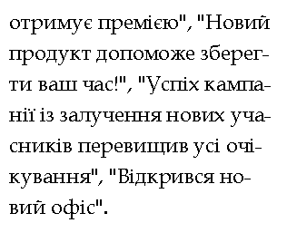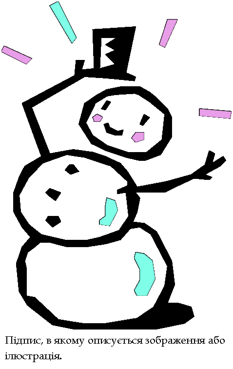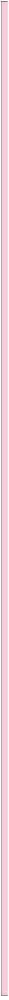
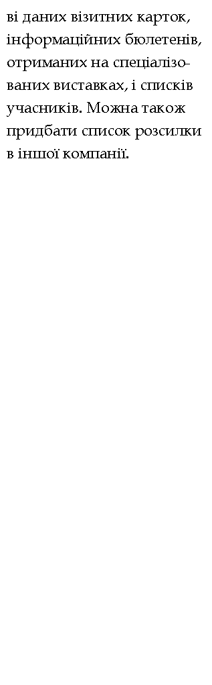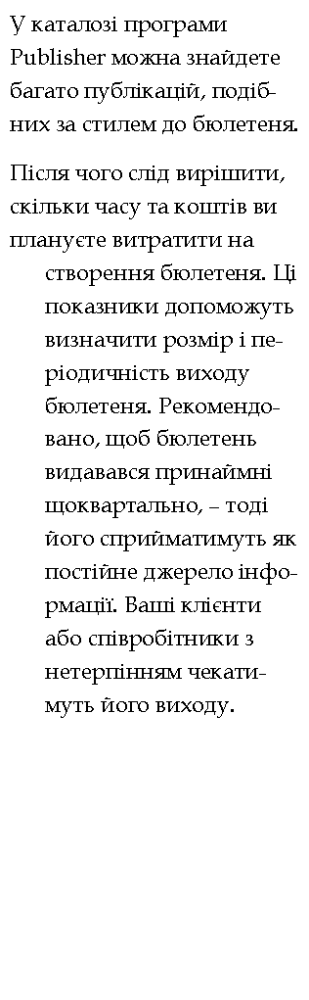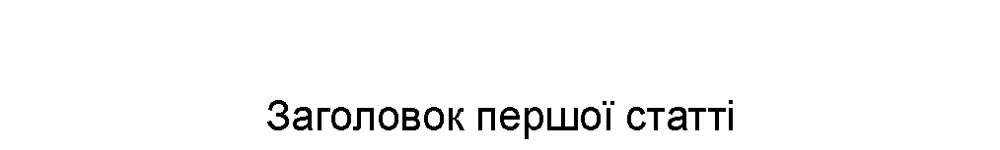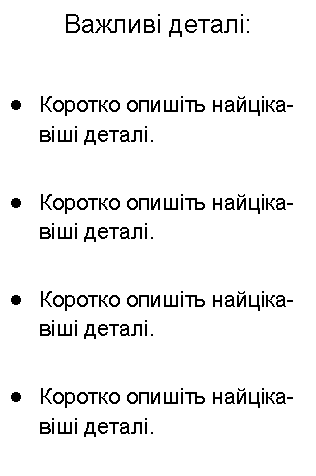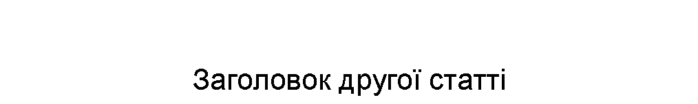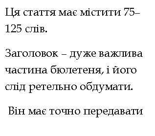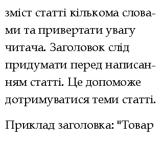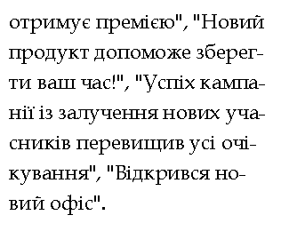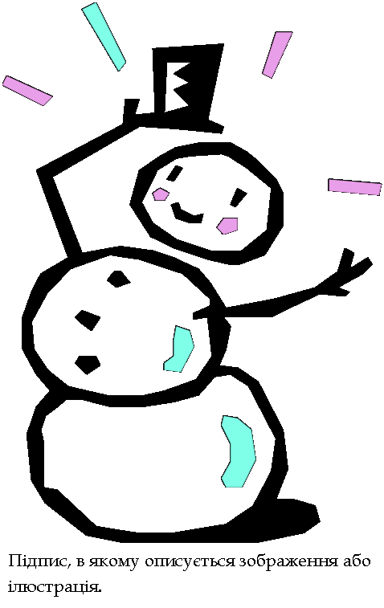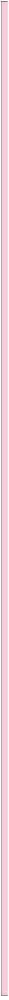